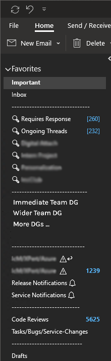

A quick post about some of the Outlook features I use including rules, categories, and search folders to stay on top of the thousands of emails that hit my work inbox on the daily!
Outlook, like many of the applications in the Office 365 suite, is quite powerful. If I had to have a guess, I'm using about 10% of its full potential in my day-to-day, but even with just that I feel like I have a pretty good handle over my inbox. I'll be touching on a few of the features that I have been using over the past four-ish years that lets me have a sidebar that looks something like this:

Those [---] dividers are just empty folders to help visually separate the list of favorites. Pretty clever, huh?
Inbox Rules üìë
The first thing that someone who gets assigned an inbox in a big corporation is going to realize is that there are a lot of emails that get sent around. And I mean... a lot. Speaking the Exchange and identity vernacular, you'll need to act quickly to stay afloat the flood of hundreds of emails that start coming at you as your account gets assigned to various security groups nested within multiple distribution groups (DG), a.k.a. mailing lists. You may be tempted to hap-hazardly create rules to route incoming mail into folders and just forget about them, but taking a systematic and well thought-out approach to triaging will help ensure that you are able to discover mail when you need to, especially the ones sent from your boss!
Referring to the image above, you'll see folders I've favorited with names that are populated with mail using inbox rules. There are plenty of resources online for guidance around creating rules themselves, so here I'll lay out my approach on the cascading rule evaluation that work for me. At a high level, the rules I have allow me to:
- Place mail that is sent to a particular DG in their respective, first-classed folder.
- DGs for teams, organizations, hobby groups, etc.
- Place mail that is sent from a particular identity to their respective folder.
- This scenario helps to deal with automated mail that is sent to a DG that I'm already sorting into a folder, but I need to special case them for some reason. For example, my wider team DG will get Pull Request notification emails for our mono-repo, so I configure a rule to key off the subject line when an email arrives from Azure DevOps and starts with "PR".
- I also have rules for service alerts that get dumped into a folder, but if there is a reply, i.e., the thread's subject starts with "RE:", then I can surface them to a dedicated folder to get visibility into issues that have evolved into an actual conversation.
- Place any other mail that have me in the To or CC in the Important folder.
- Keep the rest in the regular Inbox folder that I can triage through as needed.
Note that the above list is not in the order that they would need to be evaluated from a rule processing perspective.
This setup allows me to achieve what I call a contextualized inbox. Threads that are within the scope of a particular DG, e.g., discussion within my immediate team, all stay in the one folder, regardless of whether I'm on the To/CC lines. This does mean that I need to be more diligent around tracking threads that I need to act on, which is where Categories come into play.
Categories üè∑Ô∏è
Categories in Outlook are similar to what Labels are in Gmail-- essentially a tag that you can set on an email conversation that you can use to filter by during search, visually distinguish threads, or use to exercise other automation. I use Categories in two specific ways to boost my productivity and stay on top of my inbox.
The first use case is for the long-term tracking of various threads that are relevant to my immediate areas of ownership, e.g., a project or service area I'm working on or responsible for. When threads involving Project X come in, I can tag it with the relevant Category and Outlook will track it with that tag for the rest of the conversation. Not only can I see at a glance when a new reply comes in as to its context, but I can also leverage that tagging when searching for answers or insights that I know are within its scope. Although folder based targeting helps, categories can easily go across folders of my contextualized inbox. Categories for this use case also come and go as projects start up and wind down.
The other is to track threads that I need to act on. I have a couple of categories called Requires Response and Ongoing Threads that, as the naming suggests, indicate whether a thread is requiring a response from me or is something that I need to track and potentially follow up on. And since individual category entries can have keyboard shortcuts, I have them assigned to CTRL+F2 and CTRL+F3, respectively, so that I can quickly and efficiently triage mail. This not only ensures that I don't lose track of threads, but it removes the mental burden to do so (Zeiganik effect) and allow me to focus on the tasks at hand.
Search Folders üîé
Having defined Categories and using them is pretty good on their own, but pair them with Search folders and you have an instant lookup available to you that's just a single click away. In my Favorites sidebar, you'll see Search folders I've created prefixed with the magnifying glass emoji for Categories including one called Requires Response. After triaging incoming mail across the various folders that they've landed themselves in, I come to this folder to figure out what I need to act on and others that I need to follow up on. While I do have a separate one for Ongoing Threads, I've since included both categories in the first search folder so that just from this one view I'm able to see what I need to respond to and others that I'm keeping track of.
Quick Actions ⚡
One of the simpler features is the ability to create Quick Actions. If there are certain actions you perform regularly as part of your inbox grooming, you can automate them to a single click of a button. For me, that includes moving Pull Request notification threads for PRs I'm assigned that land in my Important folder to the Code Reviews folder once they're dealt with.
I hope this quick insight into my Outlook setup gives you some inspiration for how you, too, can stay on top of your inbox!